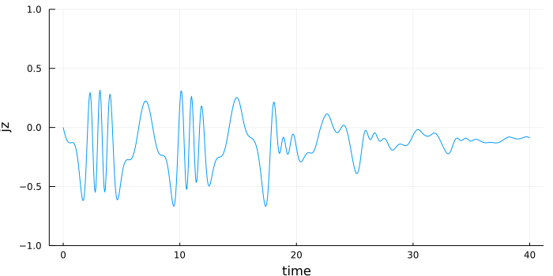
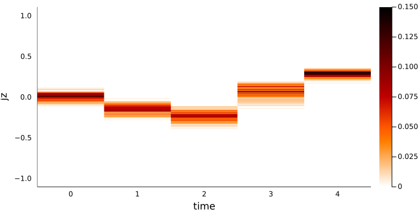
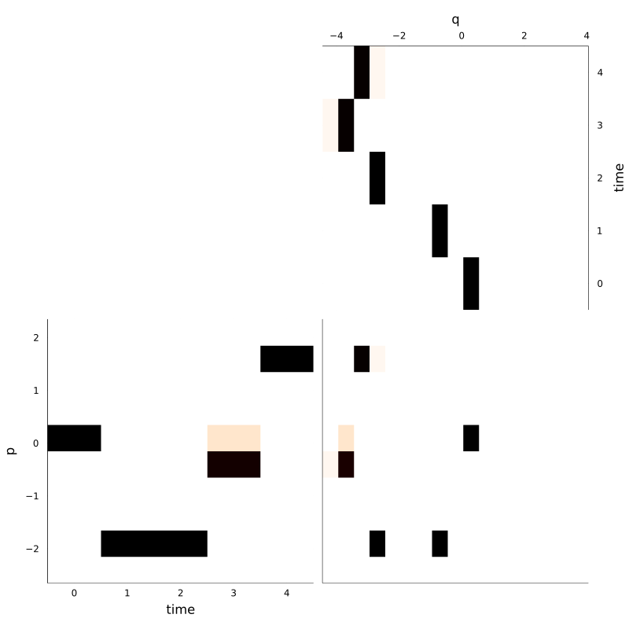
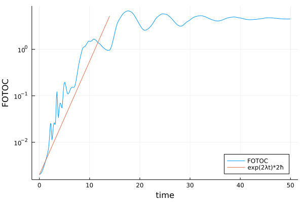
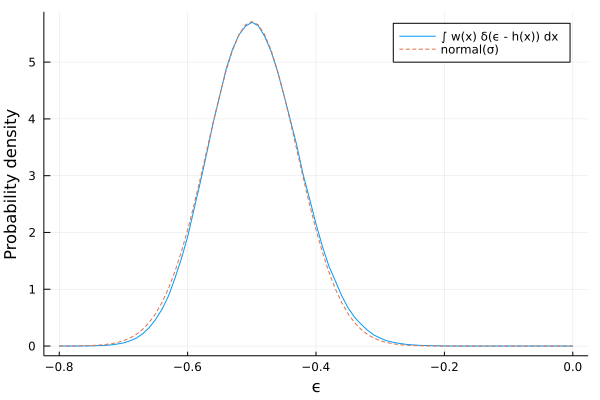

Examples for TrucatedWingerApproximation
Classical evolution of coherent states
The module Dicke.TruncatedWignerApproximation is a very powerful tool to study the classical evolution of distributions in the phase space.
Let us load the module Dicke.TruncatedWignerApproximation, together with Distributed which allows parallelization.
using Distributed
using Plots,Plots.PlotMeasures
using Dicke.TruncatedWignerApproximation
using Dicke.ClassicalDicke
addprocs(2) #we add 2 workers. Add as many as there are cores in your computer.
@everywhere using Dicke,Dicke.TruncatedWignerApproximationThe functions from Dicke.TruncatedWignerApproximation will make use of all the available workers.
The line
@everywhere using Dickeis necessary to load the module Dicke in all workers. You will get errors if you omit it.
For our first example, let us consider the Wigner function of a coherent state, evolve it classically using the truncated Wigner approximation, and then look at the expected value of the Weyl symbol of the observable $\hat{j}_z=\hat{J}_z/j$ in time with TruncatedWignerApproximation.average. Note the usage of Weyl.Jz.
system = ClassicalDickeSystem(ω=1.0, γ=1.0, ω₀=1.0)
x = Point(system, Q=1, P=1, p=0, ϵ=0.5)
j = 300
W = coherent_Wigner_HWxSU2(x,j=j)
jz = Weyl.Jz(j)/j
times = 0:0.05:40
N = 20000
jz_average=average(system;observable=jz, distribution=W, N = N, ts=times)
plot(times,jz_average, xlabel="time",
ylabel="jz",key=false,ylim=(-1,1), size=(700,350))
Okay, but we can do more. Let's see how the whole distribution of ${j}_z$ evolves classically using TruncatedWignerApproximation.calculate_distribution.
y_axis_values = -1.1:0.01:1.1
matrix = calculate_distribution(system; distribution=W, N = N,
x=:t, ts=times,
y=jz, ys=y_axis_values)
heatmap(times, y_axis_values, matrix,
size=(700,350), color=cgrad(:gist_heat, rev=true),
xlabel="time", ylabel="jz")
See this example for a comparison between exact quantum evolution and TWA.
We can chain several computations using TruncatedWignerApproximation.mcs_chain. For example, let's see the evolution of $q$ and $p$ for the same coherent state evolving in time, along with the time-averaged distribution in the plane $q,p$.
qs=-4.3:0.02:4.3
ps=-2.4:0.02:2.4
N = 50000
mcs=mcs_chain(
mcs_for_distributions(
system; N = N,
distribution=W,
y=:t, ts=times,
x=:q, xs=qs),
mcs_for_distributions(
system; N = N,
distribution=W,
y=:p, ys=ps,
x=:t, ts=times),
mcs_for_distributions(
system; N = N,
distribution=W,
x=:q, xs=qs,
y=:p, ys=ps,ts=times)
)
matrix_q_vs_t,matrix_t_vs_p,matrix_q_vs_p = monte_carlo_integrate(system,
mcs;ts=times,N=N,distribution=W,tolerate_errors=false)
plot(heatmap(qs,times, matrix_q_vs_t,
color=cgrad(:gist_heat, rev=true),
ylabel="time", xlabel="q", xmirror =true,
ymirror =true, bottom_margin = -15mm),
heatmap(times,ps, matrix_t_vs_p,
color=cgrad(:gist_heat, rev=true),
xlabel="time", ylabel="p", right_margin = -15mm),
heatmap(qs,ps, matrix_q_vs_p,
color=cgrad(:gist_heat, rev=true),
ticks=:none,size=(400,400),margin = -15mm),
layout=(@layout [_ °;
° °]),
color=cgrad(:gist_heat, rev=true),
size=(800,800),colorbar=:none,link=:both)
The function calculate_distribution can even animate the evolution (with a little help from the wonderful @animate from Plots).
N = 1000000
times = 0:0.1:40
matrices = calculate_distribution(system; distribution=W, N = N,
x=:q, y=:p,xs=qs, ys=ps, ts=times, animate=true, maxNBatch=200000);
animation=@animate for mat in matrices
heatmap(qs, ps, mat,
color = cgrad(:gist_heat, rev=true), size=(600,600),
xlabel="q", ylabel="p", key=false)
end
mp4(animation,
"animation_of_evolution.mp4",
fps=30)Computing animations with calculate_distribution(..., animate = true, ...) may need a lot of RAM. You can estimate the maximum amount of RAM needed using the shorthand formula
$(\text{\# of workers}) \times (\text{length of }$ xs $)\times (\text{length of }$ ys $)\times (\text{length of }$ ts $) \times (64 \text{ bits})$.
But this number would only be reached if trajectories filled all of the matrices in all of the workers at all the timesteps. You may stay much below this number by passing maxNBatch to calculate_distribution (or to monte_carlo_integrate). This parameter limits the number of trajectories that are calculated in batch in each worker. Between batches, data is flushed to the main worker, which takes time, but liberates RAM. If generating the animation is filling up your RAM, try to decrease maxNBatch.
Fidelity out-of-time order correlator (FOTOC)
The FOTOC is a quantum-equivalent of the classcal Lyapunov exponent. It is just the variance $\text{var}(Q)+\text{var}(q)+\text{var}(P)+\text{var}(p)$ as a function of time. It may be calculated using the TWA. (See Ref. [11] and references therein).
using Dicke.ClassicalDicke
using Dicke.ClassicalSystems
using Dicke.TruncatedWignerApproximation
using Plots
system = ClassicalDickeSystem(ω=1.0, γ=1.0, ω₀=1.0)
ts = 0:0.1:50
j = 1000
x = Point(system, Q=1, P=0, p=0, ϵ=-0.6)
W = coherent_Wigner_HWxSU2(x, j=j)
N = 10000
FOTOC=sum.(variance(system; observable=[:Q,:q,:P,:p],
distribution=W, N=N, ts=ts, tol=1e-8))
plot(ts, FOTOC,
xlabel="time", ylabel="FOTOC",
label="FOTOC", yscale=:log10)
lyapunov = lyapunov_exponent(system, u₀=x)
plot!(t->exp(2*lyapunov*t)*2/j, 0, 14,
label="exp(2λt)*2ħ", key=:bottomright)
Energy profiles of a coherent state
We have a semiclassical formula for the energy width of a coherent state, given in App. A of Ref. [7], and implemented in ClassicalDicke.energy_width_of_coherent_state. Let's check this formula against the semiclassical local density of states given by Eq. (E.3) of Ref. [17].
using Dicke.ClassicalDicke
using Dicke.ClassicalSystems
using Dicke.TruncatedWignerApproximation
using Distributions
using Plots
system = ClassicalDickeSystem(ω=1.0, γ=1.0, ω₀=1.0)
ts = 0:0.1:50
j = 1000
ϵₓ = -0.5
x = Point(system, Q=-1, P=0, p=0, ϵ=ϵₓ)
W = coherent_Wigner_HWxSU2(x, j=j)
N = 1000000
ϵ_binsize = 0.01
ϵs = -0.8:ϵ_binsize:0
ρ = calculate_distribution(system,
distribution = W,
N = N,
x = ClassicalDicke.hamiltonian(system),
xs = ϵs)'
ρ /= sum(ρ)*ϵ_binsize #normalization
σₓ = energy_width_of_coherent_state(system, x, j)
gaussian=Distributions.Normal(ϵₓ, σₓ)
plot(ϵs,ρ, label="∫ w(x) δ(ϵ - h(x)) dx")
plot!(ϵ->pdf(gaussian,ϵ), ϵs,
label="normal(σ)", linestyle=:dash,
xlabel="ϵ", ylabel="Probability density")
See this example for the full quantum computation of the energy spectrum of a coherent state.